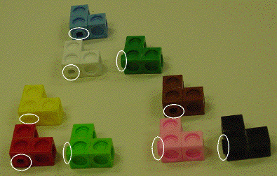
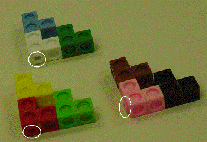

| Because the basic 3-cube configuration is an L and 3-cube
configurations are attached to one another at the end of
an arm or at a corner of the L, four configurations are possible. |
| The outward-pointing snap can be at
the end of the top arm, at the end of the side arm, or at two of the four
free faces of the corner cube. |
| A reflection of the L interchanges the location of a corner snap and the location
of an arm snap, so up to
reflection only two configurations are possible, corner and arm. |
| Other constructions are possible; for simplicity we use only Ls having corner snaps.
Selecting an orientation for the L, the stage one configurations have either corner down
snaps or corner left snaps. |
| Three stage one configurations are assembled to form a stage two configuration.
Three stage two configurations are assembled to form a stage three configuration.
Here is one recipe. |
| |
| Two corner down Ls and one corner left L can be combined to form a corner down
stage two configuration.
Two corner left Ls and one corner down L can be combined to form a corner left stage
two configuration.
Begin with five corner down Ls and four corner left Ls. |
 | |
 |
|
| From these, assemble two corner down stage two configurations and one corner left
stage two configuration. |
 | |
 |
|
| From these, assemble one corner down stage three configuration. A stage four
configuration could be assembled from
another corner down stage three and a corner left stage three. |
|